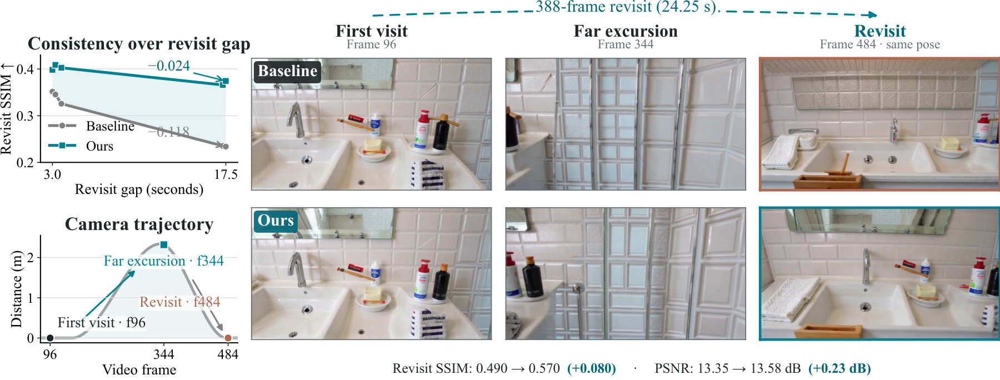
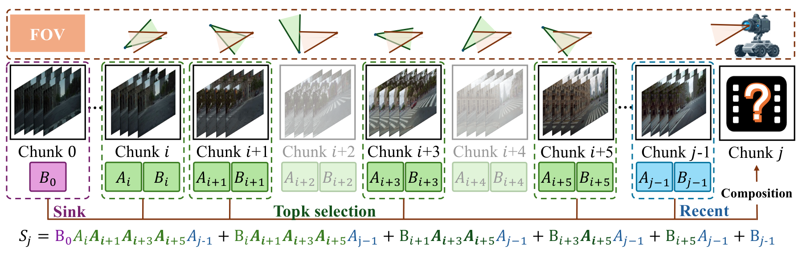

Abstract
Long-horizon video world models require persistent memory to preserve scene consistency over extended rollouts. Softmax attention retains the full generation history through a growing KV cache, whereas recurrent linear attention compresses history into fixed-size states with substantially lower memory cost. However, we identify severe long-range forgetting in Gated DeltaNet (GDN), where information from distant but relevant scenes is progressively attenuated by subsequent state updates. To address this limitation, we propose HLA-WM, a training-free hybrid linear-attention framework that combines coarse-grained geometry-guided retrieval with fine-grained recurrent linear-state computation. HLA-WM exploits the affine structure of GDN to cache compact chunk-wise transition summaries, retrieve scene-relevant historical chunks using camera geometry, and recompose them into query-specific recurrent states. On the 60-second SANA-WM-Bench, HLA-WM improves all six aggregate revisit-consistency and camera-control metrics of the base autoregressive generator without additional training, including a 0.74 dB PSNR gain and a 28.5% reduction in rotation error. The improvements persist after downstream refinement and generalize to MBench-A, where HLA-WM consistently improves all three revisit-consistency metrics across all four subsets and all evaluated inference modes over 547 samples. At a 60-second context, HLA-WM reduces historical-state memory by 12× relative to full KV caching while incurring at most a 1.6% reduction in inference throughput. These results demonstrate that selectively addressable recurrent memory can improve long-range scene recall while preserving the efficiency advantages of GDN.
Method

HLA-WM retains chunk-wise GDN states during generation and uses geometry to retrieve relevant history and recompose the GDN state.
Video Comparisons
Matched prompts and camera trajectories. Full-length videos, side by side.
Quantitative Results
SANA-WM-Bench, Top1 retrieval. Choose a trajectory split to compare Stage 1 and both refinement modes.
| Pipeline | Method | PSNR ↑ | SSIM ↑ | LPIPS ↓ | RotErr ° ↓ | TransErr ↓ | CamMC ↓ | FPS ↑ |
|---|---|---|---|---|---|---|---|---|
| Stage 1 | SANA-WM | 9.18 | 0.1729 | 0.6327 | 19.7040 | 2.2625 | 2.3974 | 22.403 |
| Stage 1 | HLA-WM | 9.91 | 0.1999 | 0.6049 | 13.5864 | 2.0928 | 2.1798 | 22.053 |
| AR refinement | SANA-WM | 14.44 | 0.2770 | 0.5738 | 20.9315 | 2.1587 | 2.3121 | 8.280 |
| AR refinement | HLA-WM | 14.82 | 0.2872 | 0.5682 | 20.2933 | 2.1910 | 2.3240 | 8.211 |
| Bi. refinement | SANA-WM | 13.04 | 0.2945 | 0.5786 | 11.3848 | 1.9893 | 2.0545 | 7.701 |
| Bi. refinement | HLA-WM | 13.56 | 0.3148 | 0.5614 | 8.8823 | 1.8637 | 1.9127 | 7.700 |
| Pipeline | Method | PSNR ↑ | SSIM ↑ | LPIPS ↓ | RotErr ° ↓ | TransErr ↓ | CamMC ↓ | FPS ↑ |
|---|---|---|---|---|---|---|---|---|
| Stage 1 | SANA-WM | 9.37 | 0.1774 | 0.6044 | 20.3759 | 1.9952 | 2.1507 | 22.403 |
| Stage 1 | HLA-WM | 10.11 | 0.1997 | 0.5848 | 15.0887 | 1.8388 | 1.9482 | 22.053 |
| AR refinement | SANA-WM | 14.12 | 0.2719 | 0.5621 | 25.6330 | 2.0099 | 2.2079 | 8.280 |
| AR refinement | HLA-WM | 14.47 | 0.2812 | 0.5557 | 22.0165 | 1.9351 | 2.1043 | 8.211 |
| Bi. refinement | SANA-WM | 13.05 | 0.2972 | 0.5468 | 13.1713 | 1.6649 | 1.7694 | 7.701 |
| Bi. refinement | HLA-WM | 13.51 | 0.3142 | 0.5384 | 10.5268 | 1.5449 | 1.6230 | 7.700 |
Benchmark results. Higher is better for PSNR, SSIM, and FPS; lower is better for the other metrics.
MBench-A · 547 samples
| Pipeline | Method | PSNR ↑ | SSIM ↑ | LPIPS ↓ |
|---|---|---|---|---|
| Stage 1 | SANA-WM | 10.17 | 0.2545 | 0.6251 |
| Stage 1 | HLA-WM | 11.01 | 0.2848 | 0.5823 |
| AR refinement | SANA-WM | 12.36 | 0.2996 | 0.6554 |
| AR refinement | HLA-WM | 12.73 | 0.3122 | 0.6447 |
| Bi. refinement | SANA-WM | 12.94 | 0.3310 | 0.5597 |
| Bi. refinement | HLA-WM | 13.52 | 0.3431 | 0.5470 |
Ablation results.